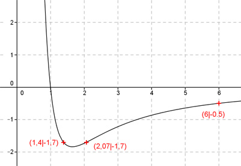
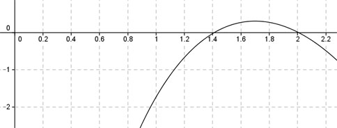

Aufgabe 102 Ergänzen Sie die Wertetabelle für den Graphen: 10 * ln x y = - ----------- x² x 2,07 oder 1,4 6 y -1,7 -0,5 10 * ln 6 y = f(6) = - ----------- = -0,5 gerundet 62  An welchen Stellen x die Funktion den Wert -1,7 annimmt, ist elementar nicht zu ermitteln. Abgelesen: Es sind 2 Stellen. Zur Berechnung wendet man ein Näherungs- verfahren an, hier die Regula falsi. f(x) = -1,7 eingesetzt : 10 * ln x -1,7 = - ----------- |*x2 x2 -1,7x2 = -10 * ln x |+ 10ln x 10ln x - 1,7x2 = 0 Als Funktion: y = 10 * ln x - 1,7 * x2 Die Nullstellen dieser Funktion (y = 0) entsprechen den gesuchten Werten für x.  Abgelesen: Nullstellen zwischen 0,5 und 1,5 und 1,8 und 2,2. (Vorzeichenwechsel für f(x)) Regula falsi: x0 = gesuchte Nullstelle x1 * |y(x2)| + x2 * |y(x1)| x0 = ------------------------------ |y(x1)| + |y(x2)| Nullstelle x0 zwischen 0,5 und 1,5 mit Excel ermittelt: A B C D E F G H I J 1,3 1,5 0,2297 0,2494 0,2985 0,3740 0,6726 0,4790 1,4041 0,0425 1,3 1,4041 0,0425 0,4136 0,0552 0,5808 0,6360 0,4561 1,3944 0,0193 1,3 1,3944 0,0193 0,4136 0,0251 0,5768 0,6019 0,4329 1,3902 0,0090 1,3 1,3902 0,0090 0,4136 0,0117 0,5751 0,5867 0,4226 1,3883 0,0042 1,3 1,3883 0,0042 0,4136 0,0055 0,5743 0,5798 0,4179 1,3874 0,0020 1,3 1,3874 0,0020 0,4136 0,0026 0,5739 0,5765 0,4157 1,3870 0,0010 Die gesuchte Nullstelle ergibt sich nach mehreren Näherungen mit ausreichender Genauigkeit zu x01 = 1,4 gerundet. Erläuterungen zur Tabelle siehe Aufgabe 101. Die Nullstelle zwischen 1,8 und 2,2 ergibt sich nach dem selben Verfahren zu x02 = 2,07 gerundet.